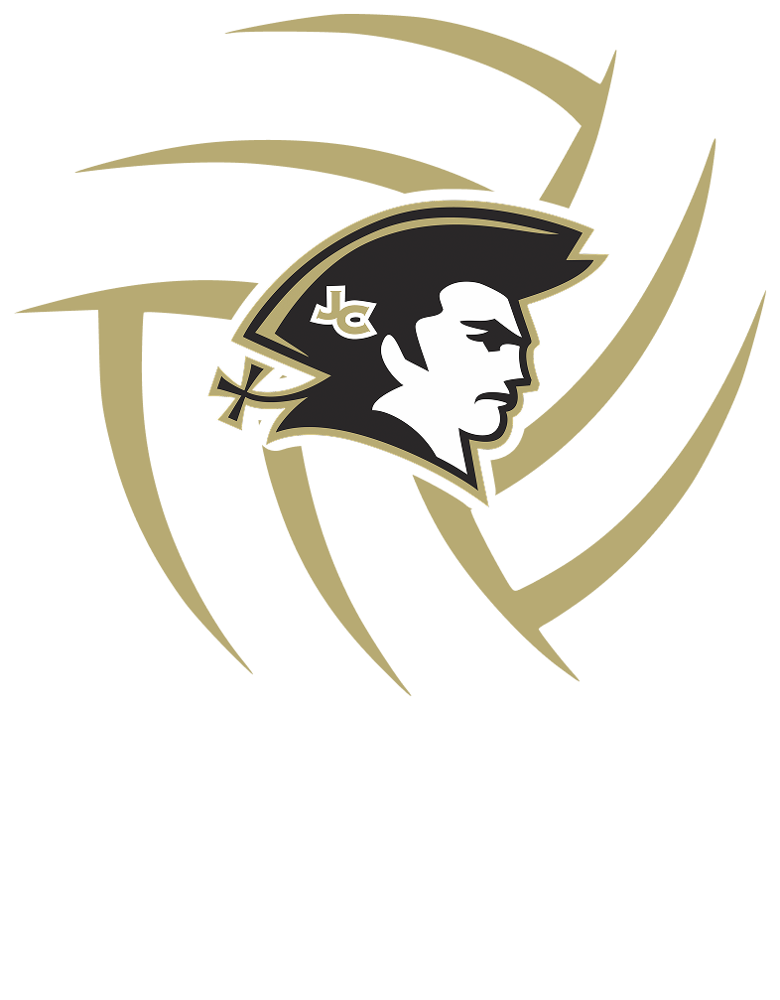
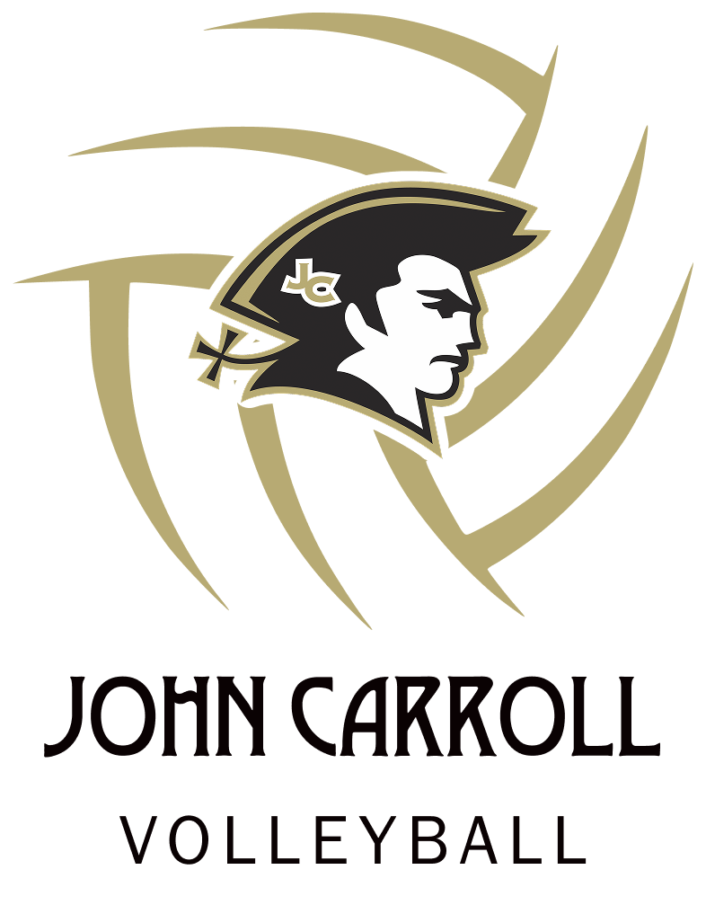
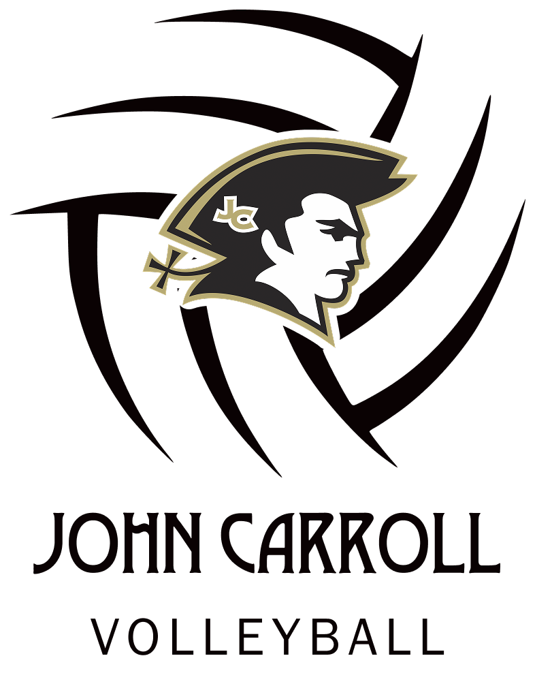
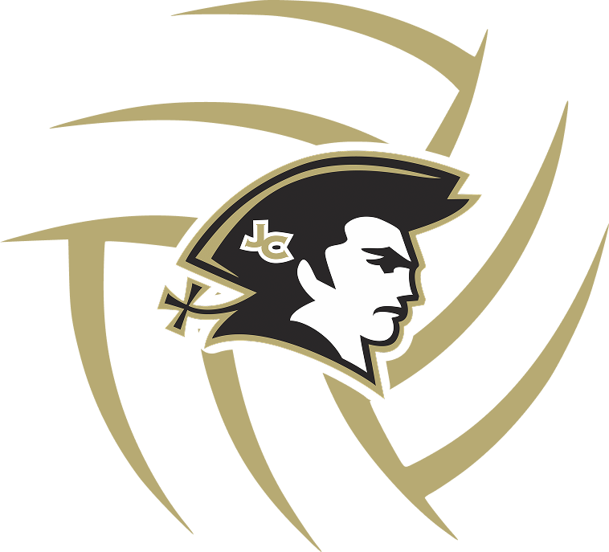

Design notes · Coaching
John Carroll Volleyball.
Keeping with the school athletics brand and font, I designed these marks for the JC volleyball program as part of my coaching.





Design notes · Coaching
Keeping with the school athletics brand and font, I designed these marks for the JC volleyball program as part of my coaching.




